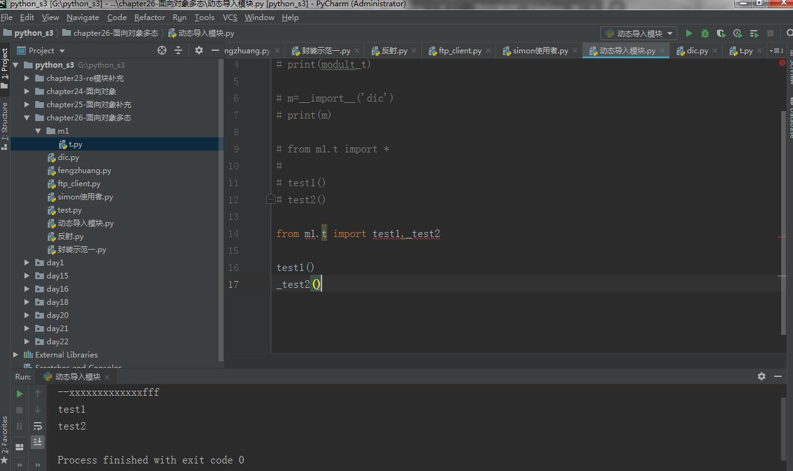

反射的概念是由Smith在1982年首次提出的，主要是指程序可以访问、检测和修改它本身状态或行为的一种能力（自省）。这一概念的提出很快引发了计算机科学领域关于应用反射性的研究。它首先被程序语言的设计领域所采用,并在Lisp和面向对象方面取得了成绩。
四个可以实现自省的函数
下列方法适用于类和对象（一切皆对象，类本身也是一个对象）
导入其他模块，利用反射查找该模块是否存在某个方法
四种方法使用效果展示：
class BlackMedium:
feature='Ugly'
def __init__(self,name,addr):
self.name=name
self.addr=addr
def sell_house(self):
print('%s 黑中介卖房子啦,傻逼才买呢,但是谁能证明自己不傻逼' %self.name)
def rent_house(self):
print('%s 黑中介租房子啦,傻逼才租呢' %self.name)
b1=BlackMedium('万成置地','回龙观天露园')
#检测是否含有某属性
print(hasattr(b1,'name'))
print(hasattr(b1,'sell_house'))
#获取属性
n=getattr(b1,'name')
print(n)
func=getattr(b1,'rent_house')
func()
# getattr(b1,'aaaaaaaa') #报错
print(getattr(b1,'aaaaaaaa','不存在啊'))
#设置属性
setattr(b1,'sb',True)
setattr(b1,'show_name',lambda self:self.name+'sb')
print(b1.__dict__)
print(b1.show_name(b1))
#删除属性
delattr(b1,'addr')
delattr(b1,'show_name')
delattr(b1,'show_name111')#不存在,则报错
print(b1.__dict__)有俩程序员，一个simon，一个是zhurui，simon在写程序的时候需要用到zhurui所写的类，但是zhurui去跟女朋友度蜜月去了，还没有完成他写的类，simon想到了反射，使用了反射机制simon可以继续完成自己的代码，等zhurui度蜜月回来后再继续完成类的定义并且去实现simon想要的功能。
总之反射的好处就是，可以事先定义好接口，接口只有在被完成后才会真正执行，这实现了即插即用，这其实是一种‘后期绑定’，什么意思？即你可以事先把主要的逻辑写好（只定义接口），然后后期再去实现接口的功能class FtpClient:
'ftp客户端,但是还么有实现具体的功能'
def __init__(self,addr):
print('正在连接服务器[%s]' %addr)
self.addr=addr#from module import FtpClient
f1=FtpClient('192.168.1.1')
if hasattr(f1,'get'):
func_get=getattr(f1,'get')
func_get()
else:
print('---->不存在此方法')
print('处理其他的逻辑')好处二：动态导入模块（基于反射当前模块成员）

三者用法展示：
##getattr
# class Foo:
# x=1
# def __init__(self,y):
# self.y=y
#
# def __getattr__(self, item):
# print('执行__getattr__')
#
# f1=Foo(10)
# print(f1.y)
# print(getattr(f1,'y')) #len(str) ------>str.__len__()
##delattr
#
# class Foo:
# x=1
# def __init__(self,y):
# self.y=y
#
# def __delattr__(self, item):
# print('删除操作__delattr__')
#
# f1=Foo(10)
# del f1.y
# print(f1.x)
##setattr 添加/修改属性会触发
class Foo:
x=1
def __init__(self,y):
self.y=y
def __setattr__(self,key,value):
print('__setattr__执行')
# self.key=value
self.__dict__[key]=value
f1=Foo(10)
print(f1.__dict__)
f1.z=2
print(f1.__dict__)包装：python为大家提供了标准数据类型，以及丰富的内置方法，其实在很多场景下我们都需要基于标准数据类型来定制我们自己的数据类型，新增/改写方法，这就用到了我们刚学的继承/派生知识 其他的标准类型均可以通过下面的方式进行二次加工
class List(list):
def append(self,p_object):
if type(p_object) is str:
# self.append(p_object)
super().append(p_object)
else:
print('只能添加字符串类型')
def show_middle(self):
mid_index=int(len(self)/2)
return self[mid_index]
# l2=List('hello world')
# print(l2,type(l2))
l1=List('helloworld')
# print(l1,type(l1))
l1.append(123456)
l1.append('sb')
print(l1)
isinstance(obj,cls)检查是否obj是否是cls的对象
class Foo(object):
pass
obj = Foo()
isinstance(obj, Foo)issubclass(sub, super)检查sub类是否是 super 类的派生类
class Foo:
pass
class Bar(Foo):
pass
f1=Foo()
print(isinstance(f1,Foo))
print(issubclass(Bar,Foo))class Foo:
def __init__(self,x):
self.x=x
def __getattr__(self, item):
print('执行的是getattr')
def __getattribute__(self, item):
print('执行的是getattribute')
raise AttributeError('抛出异常了')
f1=Foo(11)
# f1.x
f1.xxxxxx #不存在的属性访问，触发__getattr__class Foo:
def __getitem__(self, item):
print('getitem')
# retun self.__dict__
def __setitem__(self, key, value):
print('setitem')
self.__dict__[key]=value
def __delitem__(self, key):
print('delitem')
self.__dict__.pop(key)
f1=Foo()
print(f1.__dict__)
# f1.name='simon'
f1['name']='simon'
f1['age']=28
print('===========>',f1.__dict__)
# del f1.name
# print(f1.__dict__)
# print(f1.age)
del f1['name']
print(f1.__dict__)#####str#######
class Foo:
def __init__(self,name,age):
self.name=name
self.age=age
def __str__(self):
return '名字是【%s】 年龄是【%s】' %(self.name,self.age)
f1=Foo('simon',18)
print(f1) #--str(f1)-->f1.__str__()
x=str(f1)
print(x)
######repr######## ,当str与repr共存是，优先使用str
class Foo:
def __init__(self,name,age):
self.name=name
self.age=age
# def __str__(self):
# return '这是str'
def __repr__(self):
return '名字是【%s】 年龄是【%s】' %(self.name,self.age)
f1=Foo('simon',20)
#repr(f1) ----->f1.__repr__()
print(f1) #str(f1) ---->> f1.__str__() ------>f1.__repr__()备注：
'''
str函数或者print函数--->obj.__str__()
repr或者交互式解释器--->obj.__repr__()
如果__str__没有被定义,那么就会使用__repr__来代替输出
注意:这俩方法的返回值必须是字符串,否则抛出异常
'''format_dic={
'ymd':'{0.year}{0.mon}{0.day}',
'm-d-y':'{0.mon}-{0.day}-{0.year}',
'y:m:d':'{0.year}:{0.mon}:{0.day}'
}
class Date:
def __init__(self,year,mon,day):
self.year=year
self.mon=mon
self.day=day
def __format__(self, format_spec):
print('我要执行啦')
print('------->',format_spec)
if not format_spec or format_spec not in format_dic:
format_spec='ymd'
fm = format_dic[format_spec]
return fm.format(self)
d1=Date(2018,12,30)
format(d1) #d1.__format__()
print(format(d1))
print(format(d1,'ymd'))
print(format(d1,'y:m:d'))
print(format(d1,'m-d-y'))
print(format(d1,'fsdrerewr'))1.__slots__是什么:是一个类变量,变量值可以是列表,元祖,或者可迭代对象,也可以是一个字符串(意味着所有实例只有一个数据属性)
2.引子:使用点来访问属性本质就是在访问类或者对象的__dict__属性字典(类的字典是共享的,而每个实例的是独立的)
3.为何使用__slots__:字典会占用大量内存,如果你有一个属性很少的类,但是有很多实例,为了节省内存可以使用__slots__取代实例的__dict__
当你定义__slots__后,__slots__就会为实例使用一种更加紧凑的内部表示。实例通过一个很小的固定大小的数组来构建,而不是为每个实例定义一个
字典,这跟元组或列表很类似。在__slots__中列出的属性名在内部被映射到这个数组的指定小标上。使用__slots__一个不好的地方就是我们不能再给
实例添加新的属性了,只能使用在__slots__中定义的那些属性名。
4.注意事项:__slots__的很多特性都依赖于普通的基于字典的实现。另外,定义了__slots__后的类不再 支持一些普通类特性了,比如多继承。大多数情况下,你应该
只在那些经常被使用到 的用作数据结构的类上定义__slots__比如在程序中需要创建某个类的几百万个实例对象 。
关于__slots__的一个常见误区是它可以作为一个封装工具来防止用户给实例增加新的属性。尽管使用__slots__可以达到这样的目的,但是这个并不是它的初衷。 更多的是用来作为一个内存优化工具。class Foo:
__slots__=['name','age']
f1=Foo()
f1.name='alex'
f1.age=18
print(f1.__slots__)
f2=Foo()
f2.name='egon'
f2.age=19
print(f2.__slots__)
print(Foo.__dict__)
#f1与f2都没有属性字典__dict__了,统一归__slots__管,节省内存class Foo:
'我是描述信息'
pass
class Bar(Foo):
pass
# print(Foo.__doc__) #该属性无法继承给子类
print(Bar.__dict__)
print(Bar.__doc__) #该属性无法继承给子类__module__表示当前操作的对象在哪个模块
—class__ 表示当前操作的对象的类是什么
lib/simon.py
#！/usr/bin/env python
# _*_ coding:utf-8 _*_
class C:
def __init__(self):
self.name = 'simon'
aa.py
from lib.simon import C
obj=C()
print(obj.__module__) #输出 lib.simon,即：输出模块
print(obj.__class__) #输出lib.simon.C,即：输出类class Foo:
def __init__(self,name):
self.name=name
def __del__(self):
print('我执行啦')
f1=Foo('simon')
# del f1 #删除实例会触发__del__
del f1.name #删除实例的属性不会触发__del__
print('--------------------->')
#程序运行完毕会自动回收内存，触发__del__对象后面加括号，触发执行。
注：构造方法的执行是由创建对象触发的，即：对象 = 类名() ；而对于 __call__ 方法的执行是由对象后加括号触发的，即：对象() 或者 类()()
class Foo:
def __call__(self, *args, **kwargs):
print('实例执行啦 ｏｂｊ（）')
f1=Foo()
f1() #f1的类Foo 下的__call__
Foo() #Foo的类 xxx下的__call__1、迭代器协议是指：对象必须提供一个Next方法，执行该方法要么返回迭代中的下一项，要么就引起一个StopIteration异常，以终止迭代(只能往后走不能往前退)
2、可迭代对象:实现了迭代器协议的对象（如何实现：对象内部定义一个__iter__()方法）
3、协议是一种约定，可迭代对象实现了迭代器协议，python内部工具（如for循环，sum,min,max函数等）使用迭代器协议访问对象。
class Foo:
def __init__(self,n):
self.n=n
def __iter__(self):
return self
def __next__(self):
if self.n == 13:
raise StopIteration('终止了')
self.n+=1
return self.n
# l=list('simon')
# for i in l:
# print(i)
f1=Foo(10)
# print(f1.__next__())
# print(f1.__next__())
# print(f1.__next__())
for i in f1: #iter(f1)------------>f1.__iter__()
print(i)斐波那契数列：
class Fib:
def __init__(self):
self._a=1
self._b=1
def __iter__(self):
return self
def __next__(self):
if self._a > 100:
raise StopIteration('终止了')
self._a,self._b=self._b,self._a + self._b
return self._a
f1=Fib()
print(next(f1))
print(next(f1))
print(next(f1))
print(next(f1))
print(next(f1))
print('============================')
for i in f1:
print(i)描述符本质就是一个新式类，在这个新式类中，至少实现了__get__(),__set__(),__delete__()中的一个，这也被称为描述符协议
__get__():调用一个属性时，触发
__set__():为一个属性赋值时，触发
__delete__():采用del删除属性时，触发
class Foo:
def __get__(self, instance, owner):
print('=====>get方法')
def __set__(self, instance, value):
print('=====>set方法')
def __delete__(self, instance):
print('=====>delete方法')
class Bar:
x=Foo() #在何地？
#在何时
b1=Bar()
b1.x
b1.x=1
del b1.x
f1=Foo()
f1.name='simon'
print(f1.name)类属性>数据描述符#描述符Str
class Str:
def __get__(self, instance, owner):
print('Str调用')
def __set__(self, instance, value):
print('Str设置...')
def __delete__(self, instance):
print('Str删除...')
class People:
name=Str()
def __init__(self,name,age): #name被Str类代理,age被Int类代理,
self.name=name
self.age=age
#基于上面的演示,我们已经知道,在一个类中定义描述符它就是一个类属性,存在于类的属性字典中,而不是实例的属性字典
#那既然描述符被定义成了一个类属性,直接通过类名也一定可以调用吧,没错
People.name #恩,调用类属性name,本质就是在调用描述符Str,触发了__get__()
People.name='egon' #那赋值呢,我去,并没有触发__set__()
del People.name #赶紧试试del,我去,也没有触发__delete__()
#结论:描述符对类没有作用-------->傻逼到家的结论
'''
原因:描述符在使用时被定义成另外一个类的类属性,因而类属性比二次加工的描述符伪装而来的类属性有更高的优先级
People.name #恩,调用类属性name,找不到就去找描述符伪装的类属性name,触发了__get__()
People.name='egon' #那赋值呢,直接赋值了一个类属性,它拥有更高的优先级,相当于覆盖了描述符,肯定不会触发描述符的__set__()
del People.name #同上
'''
数据描述符>实例属性
#描述符Str
class Str:
def __get__(self, instance, owner):
print('Str调用')
def __set__(self, instance, value):
print('Str设置...')
def __delete__(self, instance):
print('Str删除...')
class People:
name=Str()
def __init__(self,name,age): #name被Str类代理,age被Int类代理,
self.name=name
self.age=age
p1=People('egon',18)
#如果描述符是一个数据描述符(即有__get__又有__set__),那么p1.name的调用与赋值都是触发描述符的操作,于p1本身无关了,相当于覆盖了实例的属性
p1.name='egonnnnnn'
p1.name
print(p1.__dict__)#实例的属性字典中没有name,因为name是一个数据描述符,优先级高于实例属性,查看/赋值/删除都是跟描述符有关,与实例无关了
del p1.name实例属性>非数据描述符
class Foo:
def func(self):
print('我胡汉三又回来了')
f1=Foo()
f1.func() #调用类的方法,也可以说是调用非数据描述符
#函数是一个非数据描述符对象(一切皆对象么)
print(dir(Foo.func))
print(hasattr(Foo.func,'__set__'))
print(hasattr(Foo.func,'__get__'))
print(hasattr(Foo.func,'__delete__'))
#有人可能会问,描述符不都是类么,函数怎么算也应该是一个对象啊,怎么就是描述符了
#笨蛋哥,描述符是类没问题,描述符在应用的时候不都是实例化成一个类属性么
#函数就是一个由非描述符类实例化得到的对象
#没错，字符串也一样
f1.func='这是实例属性啊'
print(f1.func)
del f1.func #删掉了非数据
f1.func()再次验证：实例属性>非数据描述符
class Foo:
def __set__(self, instance, value):
print('set')
def __get__(self, instance, owner):
print('get')
class Room:
name=Foo()
def __init__(self,name,width,length):
self.name=name
self.width=width
self.length=length
#name是一个数据描述符,因为name=Foo()而Foo实现了get和set方法,因而比实例属性有更高的优先级
#对实例的属性操作,触发的都是描述符的
r1=Room('厕所',1,1)
r1.name
r1.name='厨房'
class Foo:
def __get__(self, instance, owner):
print('get')
class Room:
name=Foo()
def __init__(self,name,width,length):
self.name=name
self.width=width
self.length=length
#name是一个非数据描述符,因为name=Foo()而Foo没有实现set方法,因而比实例属性有更低的优先级
#对实例的属性操作,触发的都是实例自己的
r1=Room('厕所',1,1)
r1.name
r1.name='厨房'总结：
1、描述符本身应该定义成新式类，被代理的类也应该是新式类
2、必须把描述符定义成这个类的代理，不能为定义到构造函数中
3、要严格遵循优先级，优先级由高到低分别
操作文件对象的时候：
with open('text.txt','r') as f:
'代码块'上述叫做上下文管理协议，即with语句，为了让一个对象兼容with语句，必须在这个对象的类中声明__enter__和__exit__方法
class Foo:
def __init__(self,name):
self.name=name
def __enter__(self):
print('执行enter')
return self
def __exit__(self, exc_type, exc_val, exc_tb):
print('执行exit')
# f=Open('a.txt')
with Foo('a.txt') as f:
print(f)
print(f.name)
print('00000000000000000000')上述代码分析：
class Foo:
def __init__(self,name):
self.name=name
def __enter__(self):
print('执行enter')
return self
def __exit__(self, exc_type, exc_val, exc_tb):
print('执行exit')
print(exc_type)
print(exc_val)
print(exc_tb)
return True
# f=Open('a.txt')
with Foo('a.txt') as f:
print(f)
print(asfdreevergewafa) #触发__exit__
print(f.name)
print('00000000000000000000')
#with obj as f:
'代码块'
1、with obj ---->>触发obj.__enter__(),拿到返回值
2、as f--------->f=返回值、
3、with obj as f 等同于 f=obj.__enter__()
4、执行代码块
一：没有异常的情况下，整个代码块运行完毕后去触发__exit__,它的三个参数都为None
二：有异常的情况下，从异常出现的位置直接触发__exit__
a: 如果__exit__的返回值为True，代表吞掉了异常
b: 如果__exit__的返回值不为True，代表了吐出了异常
c: __exit__的运行完毕就代表了整个with语句的执行完毕总结：
1.使用with语句的目的就是把代码块放入with中执行，with结束后，自动完成清理工作，无须手动干预
2.在需要管理一些资源比如文件，网络连接和锁的编程环境中，可以在__exit__中定制自动释放资源的机制，你无须再去关系这个问题，这将大有用处